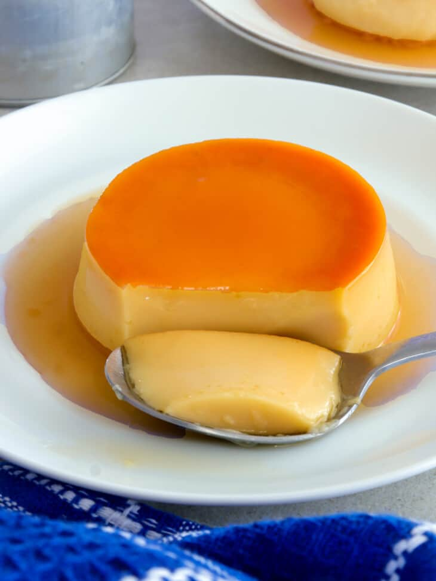

Home
Leche Flan

Photo by Max Griss on Unsplash
Description
The Filipino Leche Flan is one of my favorite handaan desserts for when there are family gatherings in birthdays, pasko, and bagong taon. The soft texture of the gelatinous flan and the creamy and sweet flavor from the condensed milk, caramelized sugar, and egg yolks, it takes me back when me and my family would had made them and ate leche flan together. Now that I am older and wiser, I can now make and enjoy leche flan with my own efforts, albeit nowadays eating with restraint instead of munching away like when I was young.
Ingredients
- 10 pieces eggs
- 14 ounces condensed milk
- 1 cup fresh milk or evaporated milk
- 1 cup granulated sugar
- 1 teaspoon vanilla extract (optional)
Steps
- Separate the egg whites from the yolks as only the egg yolks will be used.
- Beat the separated egg yolks using a fork or an egg beater, but do not overbeat!
- Add the condensed milk and mix thoroughly.
- Pour-in the milk and the optional vanilla. Mix well.
- Heat up the llanera or tin mold using low fire on the stove.
- Add granulated sugar on the llanera and mix thoroughly until melted into caramel.
- Spread the caramel throughout the bottom of the llanera pan.
- Wait for 3 to 5 minutes to settle the caramel and then pour the egg yolk and milk mixture on the mold
- Cover the top of the mold with aluminum foil to trap the steam heat.
- Steam the llanera containing the egg yolk and milk mixture for 30 to 35 minutes.
- After steaming, let it rest and cool down before storing and refrigerating.
- Serve cold for dessert. Enjoy!
Recipe from Vanji Moreno on Panlasang Pinoy